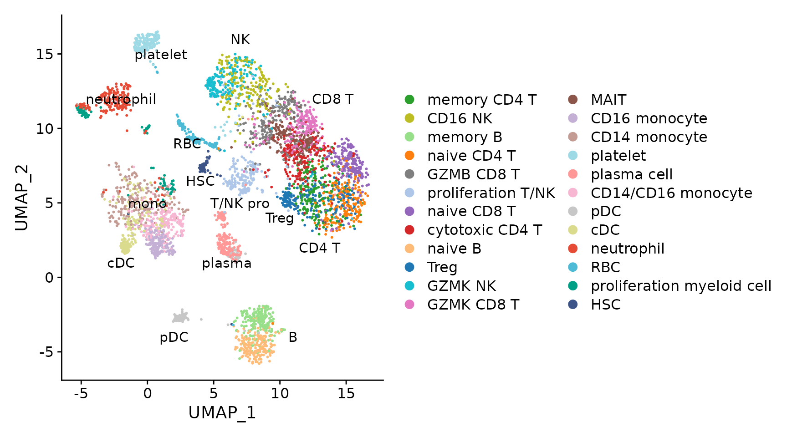
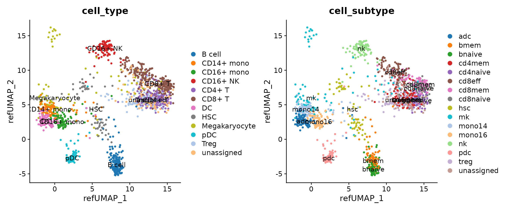
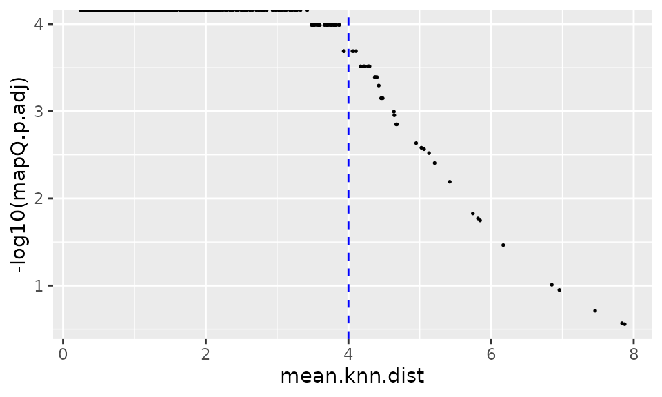
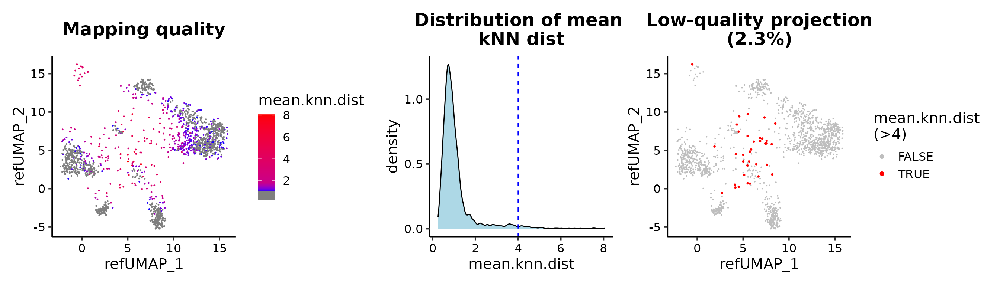
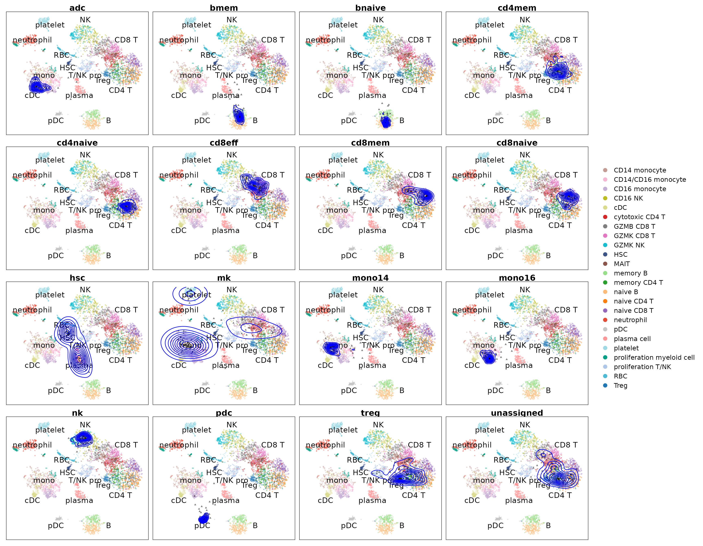

library(ProjectSVR)
library(Seurat)
library(tidyverse)
options(timeout = max(3600, getOption("timeout")))
`%notin%` <- Negate(`%in%`)
# reference datass
download.file(url = "https://zenodo.org/record/8147304/files/disco_pbmc_small.seurat.slim.rds",
destfile = "disco_pbmc_small.seurat.slim.rds")
# query data
download.file(url = "https://zenodo.org/record/8147304/files/query_pbmc_small.seurat.slim.rds",
destfile = "query_pbmc_small.seurat.slim.rds")
seu.ref <- readRDS("disco_pbmc_small.seurat.slim.rds")
DimPlot(seu.ref, pt.size = 0.4) + scale_color_manual(values = seu.ref@misc$data.refplot$colors) +
geom_text(inherit.aes = F, data = seu.ref@misc$data.refplot$text.pos, mapping = aes(x, y, label = label),
size = 4)
Here we extract the top25 marker genes for each cell type (ribosomal and mitochondrial genes were removed).
##
## memory CD4 T CD16 NK
## 200 200
## memory B naive CD4 T
## 200 200
## GZMB CD8 T proliferation T/NK
## 200 200
## naive CD8 T cytotoxic CD4 T
## 200 200
## naive B Treg
## 200 200
## GZMK NK GZMK CD8 T
## 200 200
## MAIT CD16 monocyte
## 200 200
## CD14 monocyte platelet
## 200 200
## plasma cell CD14/CD16 monocyte
## 200 200
## pDC cDC
## 200 200
## neutrophil RBC
## 200 200
## proliferation myeloid cell HSC
## 110 108
seu.ref[["RNA"]]@counts <- seu.ref[["RNA"]]@data
seu.ref <- NormalizeData(seu.ref)
all.markers <- mcFindAllMarkers(seu.ref, do.flatten = F, n.cores = 20)
top.genes <- lapply(all.markers, function(xx) {
yy <- subset(xx, p_val_adj < 1e-06 & avg_log2FC > log2(1.5))
yy <- subset(yy, Gene.name.uniq %notin% ribo.genes)
yy <- yy[!grepl("^MT-", yy$Gene.name.uniq), ]
head(yy$Gene.name.uniq, 25)
})
sapply(top.genes, length)## memory CD4 T CD16 NK
## 25 25
## memory B naive CD4 T
## 25 25
## GZMB CD8 T proliferation T/NK
## 25 25
## naive CD8 T cytotoxic CD4 T
## 25 25
## naive B Treg
## 25 25
## GZMK NK GZMK CD8 T
## 25 25
## MAIT CD16 monocyte
## 25 25
## CD14 monocyte platelet
## 25 25
## plasma cell CD14/CD16 monocyte
## 25 25
## pDC cDC
## 25 25
## neutrophil RBC
## 25 25
## proliferation myeloid cell HSC
## 25 25
seu.ref <- seu.ref[bg.genes, ]
seu.ref <- UCell::AddModuleScore_UCell(seu.ref, features = top.genes, ncores = 20)
gss.mat <- select(seu.ref@meta.data, ends_with("_UCell"))
embeddings.df <- FetchData(seu.ref, vars = paste0("UMAP_", 1:2))
batch.size = 4000 # number of subsampled cells for each SVR model
n.models = 5 # number of SVR models trained
umap.model <- FitEnsembleSVM(feature.mat = gss.mat, emb.mat = embeddings.df, do.norm = "L2", batch.size = batch.size,
n.models = n.models, cores = 5)ref.cellmeta stores:
[optional] colors: for plots
[optional] text.pos: text annotation on the plots
meta.data: cell meta data (embeddings + cell type information)
ref.cellmeta <- seu.ref@misc$data.refplot
ref.cellmeta$meta.data <- FetchData(seu.ref, vars = c(paste0("UMAP_", 1:2), "cell_type", "cell_subtype"))
reference <- list(
"models" = list(
"umap" = umap.model
),
"genes" = list(
"gene.sets" = top.genes, # list
"bg.genes" = bg.genes # vector
),
"ref.cellmeta" = ref.cellmeta # list for reference plot
)
seu.q <- readRDS("query_pbmc_small.seurat.slim.rds")
seu.q[["RNA"]]@counts <- seu.q[["RNA"]]@data
seu.q <- ProjectSVR::MapQuery(seu.q, reference = reference, ncores = 5)
p1 <- DimPlot(seu.q, reduction = "ref.umap", group.by = "cell_type", label = T)
p2 <- DimPlot(seu.q, reduction = "ref.umap", group.by = "cell_subtype", label = T)
(p1 + p2) & ggsci::scale_color_d3("category20")
seu.q$cell_subtype2 <- seu.q$cell_subtype
PlotProjection(seu.q, reference, split.by = "cell_subtype2", ref.color.by = "cell_subtype", ref.size = 0.5,
ref.alpha = 0.3, query.size = 1, query.alpha = 0.5, n.row = 4)
seu.q <- ProjectSVR::LabelTransfer(seu.q, reference, ref.label.col = "cell_subtype")
DimPlot(seu.q, reduction = "ref.umap", group.by = "knn.pred.celltype") + scale_color_manual(values = reference$ref.cellmeta$colors)
data.stat <- table(seu.q$cell_subtype, seu.q$knn.pred.celltype)
pheatmap::pheatmap(data.stat, cluster_cols = F, display_numbers = T, number_format = "%.0f", number_color = "black")
## R version 4.1.2 (2021-11-01)
## Platform: x86_64-pc-linux-gnu (64-bit)
## Running under: CentOS Linux 7 (Core)
##
## Matrix products: default
## BLAS: /opt/R4.1/lib64/R/lib/libRblas.so
## LAPACK: /opt/R4.1/lib64/R/lib/libRlapack.so
##
## locale:
## [1] LC_CTYPE=en_US.UTF-8 LC_NUMERIC=C
## [3] LC_TIME=en_US.UTF-8 LC_COLLATE=en_US.UTF-8
## [5] LC_MONETARY=en_US.UTF-8 LC_MESSAGES=en_US.UTF-8
## [7] LC_PAPER=en_US.UTF-8 LC_NAME=C
## [9] LC_ADDRESS=C LC_TELEPHONE=C
## [11] LC_MEASUREMENT=en_US.UTF-8 LC_IDENTIFICATION=C
##
## attached base packages:
## [1] stats graphics grDevices utils datasets methods base
##
## other attached packages:
## [1] forcats_0.5.2 stringr_1.4.1 dplyr_1.0.10
## [4] purrr_0.3.4 readr_2.1.2 tidyr_1.2.1
## [7] tibble_3.1.8 ggplot2_3.4.1 tidyverse_1.3.2
## [10] sp_1.5-0 SeuratObject_4.1.2 Seurat_4.2.0
## [13] ProjectSVR_0.1.0.9000
##
## loaded via a namespace (and not attached):
## [1] utf8_1.2.2 reticulate_1.26 tidyselect_1.1.2
## [4] mlr3learners_0.5.4 htmlwidgets_1.5.4 BiocParallel_1.28.3
## [7] grid_4.1.2 Rtsne_0.16 mlr3misc_0.11.0
## [10] munsell_0.5.0 codetools_0.2-18 bbotk_0.5.4
## [13] ragg_1.2.2 ica_1.0-3 future_1.28.0
## [16] miniUI_0.1.1.1 mlr3verse_0.2.5 withr_2.5.0
## [19] spatstat.random_3.0-1 colorspace_2.0-3 progressr_0.11.0
## [22] highr_0.9 knitr_1.40 uuid_1.1-0
## [25] rstudioapi_0.14 stats4_4.1.2 ROCR_1.0-11
## [28] tensor_1.5 listenv_0.8.0 labeling_0.4.2
## [31] mlr3tuning_0.14.0 lgr_0.4.4 polyclip_1.10-0
## [34] pheatmap_1.0.12 farver_2.1.1 rprojroot_2.0.3
## [37] parallelly_1.32.1 vctrs_0.5.1 generics_0.1.3
## [40] clusterCrit_1.2.8 xfun_0.33 R6_2.5.1
## [43] doParallel_1.0.17 clue_0.3-61 isoband_0.2.5
## [46] spatstat.utils_3.0-1 cachem_1.0.6 assertthat_0.2.1
## [49] promises_1.2.0.1 scales_1.2.1 googlesheets4_1.0.1
## [52] rgeos_0.5-9 gtable_0.3.1 globals_0.16.1
## [55] goftest_1.2-3 rlang_1.0.6 systemfonts_1.0.4
## [58] GlobalOptions_0.1.2 splines_4.1.2 lazyeval_0.2.2
## [61] gargle_1.2.1 paradox_0.10.0 spatstat.geom_3.0-3
## [64] broom_1.0.1 checkmate_2.1.0 modelr_0.1.9
## [67] yaml_2.3.5 reshape2_1.4.4 abind_1.4-5
## [70] mlr3_0.14.0 backports_1.4.1 httpuv_1.6.6
## [73] tools_4.1.2 ellipsis_0.3.2 spatstat.core_2.4-4
## [76] jquerylib_0.1.4 RColorBrewer_1.1-3 BiocGenerics_0.40.0
## [79] ggridges_0.5.3 Rcpp_1.0.9 plyr_1.8.7
## [82] rpart_4.1.16 deldir_1.0-6 pbapply_1.5-0
## [85] GetoptLong_1.0.5 cowplot_1.1.1 S4Vectors_0.32.4
## [88] zoo_1.8-11 haven_2.5.1 ggrepel_0.9.1
## [91] cluster_2.1.4 fs_1.5.2 magrittr_2.0.3
## [94] data.table_1.14.2 scattermore_0.8 circlize_0.4.15
## [97] reprex_2.0.2 lmtest_0.9-40 RANN_2.6.1
## [100] googledrive_2.0.0 fitdistrplus_1.1-8 matrixStats_0.62.0
## [103] hms_1.1.2 patchwork_1.1.2 mime_0.12
## [106] evaluate_0.16 xtable_1.8-4 readxl_1.4.1
## [109] IRanges_2.28.0 gridExtra_2.3 shape_1.4.6
## [112] UCell_1.3.1 compiler_4.1.2 mlr3cluster_0.1.4
## [115] KernSmooth_2.23-20 crayon_1.5.1 htmltools_0.5.3
## [118] tzdb_0.3.0 mgcv_1.8-40 later_1.3.0
## [121] lubridate_1.8.0 DBI_1.1.3 formatR_1.12
## [124] dbplyr_2.2.1 ComplexHeatmap_2.10.0 MASS_7.3-58.1
## [127] mlr3data_0.6.1 Matrix_1.5-1 cli_3.4.1
## [130] parallel_4.1.2 igraph_1.3.5 pkgconfig_2.0.3
## [133] pkgdown_2.0.6 plotly_4.10.0 spatstat.sparse_3.0-0
## [136] xml2_1.3.3 foreach_1.5.2 bslib_0.4.0
## [139] mlr3fselect_0.7.2 rvest_1.0.3 digest_0.6.29
## [142] sctransform_0.3.5 RcppAnnoy_0.0.19 mlr3filters_0.6.0
## [145] spatstat.data_3.0-0 cellranger_1.1.0 rmarkdown_2.16
## [148] leiden_0.4.3 uwot_0.1.14 curl_5.0.1
## [151] shiny_1.7.2 rjson_0.2.21 lifecycle_1.0.3
## [154] nlme_3.1-155 jsonlite_1.8.0 mlr3tuningspaces_0.3.0
## [157] desc_1.4.2 viridisLite_0.4.1 fansi_1.0.3
## [160] pillar_1.8.1 ggsci_2.9 lattice_0.20-45
## [163] fastmap_1.1.0 httr_1.4.4 survival_3.4-0
## [166] glue_1.6.2 mlr3viz_0.5.10 png_0.1-7
## [169] iterators_1.0.14 stringi_1.7.6 sass_0.4.2
## [172] mlr3pipelines_0.4.2 palmerpenguins_0.1.1 textshaping_0.3.6
## [175] memoise_2.0.1 irlba_2.3.5 future.apply_1.9.1